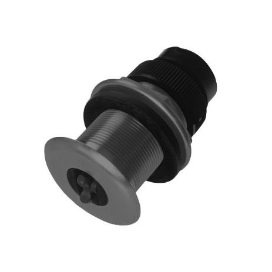

Introduction to AFRL Jetyak¶
Jetyak Components¶
While it is likely possible to implement this design using comparable components to the ones listed below, we chose these components due to the availability of existing documentation and prior experimentation from the large population of Pixhawk users.
The first main component is of course the Mokai ES-Kape with quick attach components.
There are several structural modifications to the factory shipped boat required to support our end-state design. These structural modifications are documented in a standalone document by our structural engineer. :red: PLACE HOLDER FOR LINK TO GEORGE’S DOCUMENTATION OF THE MACHINE SHOP MODIFICATIONS FOR THE FLOOR, BATTERY AND BOX HOLDERS, AND MAST MOUNT.
Autopilot Hardware¶
After researching the few consumer off-the-shelf (COTS) autopilot platforms available, we selected the Pixhawk due to its high reliability rating and robust capabilities without need for numerous peripheral support devices.
As our research team will be creating robot vision applications as well as depth and sonar sensor applications, we will also use a separate companion computer running or Linux with a ROS node and MAVROS for processing sensor data and sending control messages to the Pixhawk for controlling the Jetyak. This setup has been proven on ground and air platforms to be capable of running both robot control and the sensor processing code.
For more support to augment this tutorial, be prepared to read many topics specific to the flight control community that the Pixhawk and its autopilot components were originally designed to support.
Note
Parts required and detailed diagrams and schematics will be documented and referenced in appendices to this tutorial.
6+ Channel RC Transmitter and Receiver¶
You’ll need a radio control transmitter to manually control your Jetyak and to activate its control modes. You can use any RC transmitter/receiver system with at least 6 channels, however due to the robust capabilities and highly flexible programming capabilities, our team has chosen the Fr Sky Taranis X9D Radio with D8R-XP with PPM control to minimize cabling and ports between the radio receiver and Pixhawk.
Do not get one designed for cars (with a steering wheel and throttle trigger). The goal is not be driving the Jetyak manually, but only to have an override mechanism, should conditions dictate. If you’re on a budget, the Turnigy 9x ($54) is a popular choice. If you’d like better quality, we chose the Taranis FrSky Radio, and this tutorial will be focused on its implementation.
GPS module¶
Your Jetyak will require a GPS module. The module used in this project and described in this tutorial is the Radiolink SE100 GPS Module for Pixhawk, which replaced the 3DR UBlox GPS + Compass Module, both of which include a compass that Mission Planner recognizes and uses as a secondary compass to the one in the Pixhawk.
Battery and Charger¶
You’ll also need a stout battery to run all the additional onboard hardware separate from the factory battery that comes with the Mokai ES-Kape, and a charger. In our case we chose a 12V, 35AH battery from MightyMax to power all non-factory components of the Jetyak. You find all the conditioning, fusing, and protection steps and specifications we took in the power configuration section of initial setup.
Ground Control Station¶
The (free and open source) Mission Planner is required if you’re going to be loading new versions of Rover onto the autopilot controller, and for first-time tuning and calibration. At current time, Mission Planner uses the Rover template to setup initial parameters to be as close as possible to the requirements for operating a boat. It runs on a PC and can also be used for planning missions. One detailed section of this tutorial will cover the initial setup of Mission Planner and the step-by-step modification of the Rover parameters to allow control of your jetyak.
At this point, you could test, build, program, and control a pseudo-autonomous Jetyak, which would be capable of following missions programed through mission planner software and relayed to the jetyak via waypoint navigation commands. However, if seeking to explore the world of true autonomous operation, where you can program decision making for an onboard autonomous controller, then you will need the following “optional” hardware.
Optional Hardware¶
Telemetry Radio¶
A telemetry radio allows your jetyak to communicate with your ground station remotely using the MAVLink protocol. This allows you to interact with your missions in real time and receive streaming data from your vehicle’s cameras and other components. This adds considerable convenience to your missions. RC grade solutions, like the one below will meet the needs of many.
However, in our case, we want the capability to send and receive large swaths of sonar, weather, depth, and robot health data at long ranges during missions. The COTS solution is for RF modems to be deployed and programmed into the overall design. We have selected the RF900+ modems from RFDesign in Australia, along with all supporting hardware listed in the equipment appendix, to accomplish this task.
Sensors¶
Sonar/Depth are recommended to aid in underwater obstacle avoidance and mapping the environment. After attempting to reverse engineer some proprietary transducers from Garmin and Humminbird, we chose NMEA 0183 CruzPro AT120-P sensor due to its relatively inexpensive cost and the simplicity of reading the desired data fields directly from its serial output, without proprietary drivers.
Anemometer, or wind sensor is useful in measuring instantaneous wind speed and direction on the vessel. Information collected can be used to map the environmental wind patterns and predict nearby wind dynamics. We chose the Sparkfun weather station, which is easily controlled through an Arduino Uno with a transceiver riser board to accommodate the RJ11 connections to the wind direction, wind speed, and rain gauge (unused in our implementation) sensors. Precise wiring, soldering and programing instructions and code are included in the sensor portion of this tutorial.

Water current speed sensors is the most vital and challenging of the sensors to employ. While there are acoustic doppler current profilers (ADCP) available, their price excludes them from our goal of maintaining an inexpensive implementation. The obvious choice is to employ reliable and long existing technology of hall effect sensors mounted in a waterproof housing which sends an interrupt signal to an Arduino each time the magnet passes the gate. The Arduino simply converts the circumference of the wheel along with the number of interrupts per time slot into a linear velocity. Again after finding the frequencies and voltages of proprietary sensors of hummingbird to be outside the ranges of our 5V Arduino-based sensor group, we focused on a more open source solution and arrived at the ST800/P120 paddle wheel sensor from Raymarine. Again, the modifications, build, testing, and calibrations conducted with these sensors is included in the sensor chapter.
Combining the measurements of these sensors together enables and wholistic mapping of dynamic environments which in turn enables us to develop strategies for entering such environments as well as implement controls once in a dynamic environment for the ASV to maintain precise and efficient control. ADD Sensor Node, power distribution, mast sensor mounts, underwater sensor mount and poles, splash guards (3).